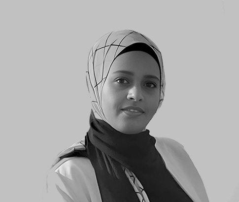

BUILD WORLDS.
BREAK LIMITS.
SHIP GAMES.
I'm Nermin — a gameplay programmer turning ambitious ideas into games people play. 10+ years building with Unity & Unreal, from first prototype to live operations.
Professional

MAKING GAMES
A few worlds I’ve helped build.
Explore the games, the experiments, and the systems behind them.
Thoughtful code.
Memorable play.
Senior Game Developer with 10+ years shipping Unity and Unreal Engine titles across mobile, PC, VR, and WebGL, including Clash of Beasts and Captain Laserhawk: The Game at Ubisoft Abu Dhabi. Specializes in gameplay and meta-systems architecture, performance optimization, and live-operations support for mobile and PC titles.
Proven track record integrating third-party SDKs, stabilizing live builds, and delivering cross-platform tools in close collaboration with design, art, and backend teams.
Currently developing a math course for ITI's MaharaTech e-learning platform, and actively seeking a new senior role to bring this expertise to a growing team.
Experience
Gameplay Programmer
- Designed and implemented core gameplay/meta systems for Captain Laserhawk: The Game, including event systems, input rebinding, and an ECS-based dynamic collider system.
- Developed gameplay systems and live-service features in Unity for Clash of Beasts, integrating Levelplay Ads and Firebase Crashlytics for monetization and stability monitoring.
- Owned build stability and deployment across live and in-development projects, resolving gameplay and performance issues to keep releases on schedule.
- Built tools and features that streamlined designer workflows and improved iteration speed.
- Partnered with design, art, and backend teams to integrate features smoothly across disciplines.
- Recognized as Tinkerer of the Season for an in-house prototype; earned Unity Certified Professional certification during tenure.
Senior Game Programmer
- Refactored the iBaloot (iOS/Android) codebase using Dependency Injection and the Zenject framework, improving maintainability and reducing technical debt.
- Delivered new features and resolved bugs across the live product while maintaining stability for active players.
- Partnered with the backend team to integrate front-end changes cleanly into the live release pipeline.
- Owned ongoing maintenance of the live application, ensuring a consistent experience across updates.
Lead Programmer
- As the sole programmer on the team, owned the core game loop and resource-generation systems for Dogs Den (idle game) end-to-end, using UniRx.
- Implemented Beamable SDK microservices and dynamic content to power server-side validation and live content updates.
- Drove performance optimization and bug-fix ownership across multiple mobile titles.
- Planned and delivered gameplay functionality in close collaboration with artists and designers.
Lead Programmer & Co-Founder
- As Lead Programmer overseeing a small engineering team, rapidly prototyped hyper-casual and casual game concepts, turning ideas into playable builds within days to validate player engagement and market fit, the fast-iteration, data-driven approach central to hybrid-casual publishing.
- Integrated ad monetization and analytics SDKs to track player behavior and inform go/no-go decisions on which prototypes advanced to full development.
- Co-led ideation and creative direction as a founding team member, directing a small team of two programmers and two artists to shape each prototype's core gameplay loop and hook to stand out in a competitive casual mobile market.
Game Programming Track Supervisor
- Instructed Unity, Unreal Engine, and game programming patterns; developed curriculum and coordinated instructors.
- Mentored students' graduation projects, reinforcing technical leadership alongside production experience.
- Continue to return annually as a guest instructor for a 3-day game programming course.
Senior Game Programmer
- Built cross-platform tools spanning web, mobile, PC, and VR.
- Researched and optimized handling of large 3D models from photogrammetry and 3D scanning across target platforms.
Early Career
The tools behind the play.
Engines
Languages
Platforms
Gameplay & Systems
Tools & SDKs
Collaboration
Education
Recognition
Let's build something
that ships.
Open to senior gameplay programming and systems-architecture roles. Based in Cairo, working remote or on-site.